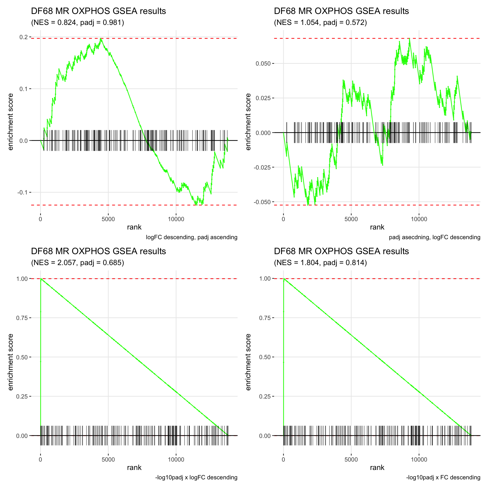
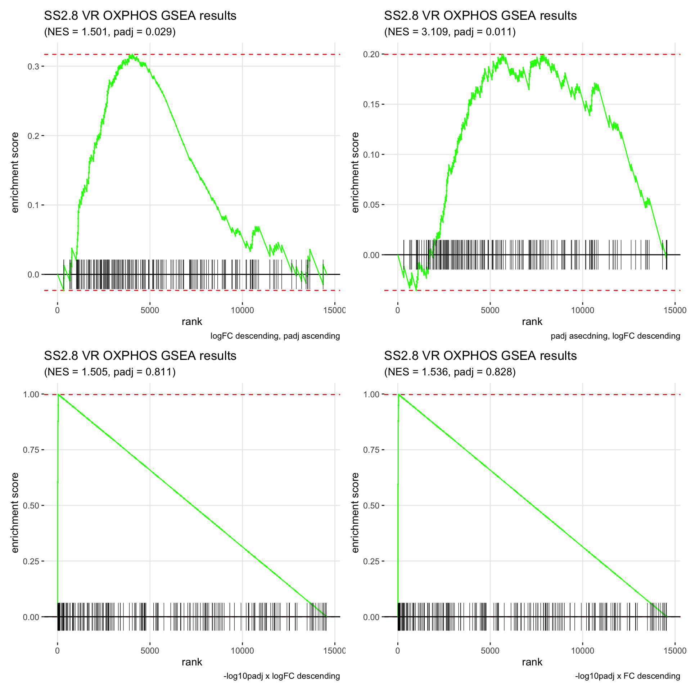
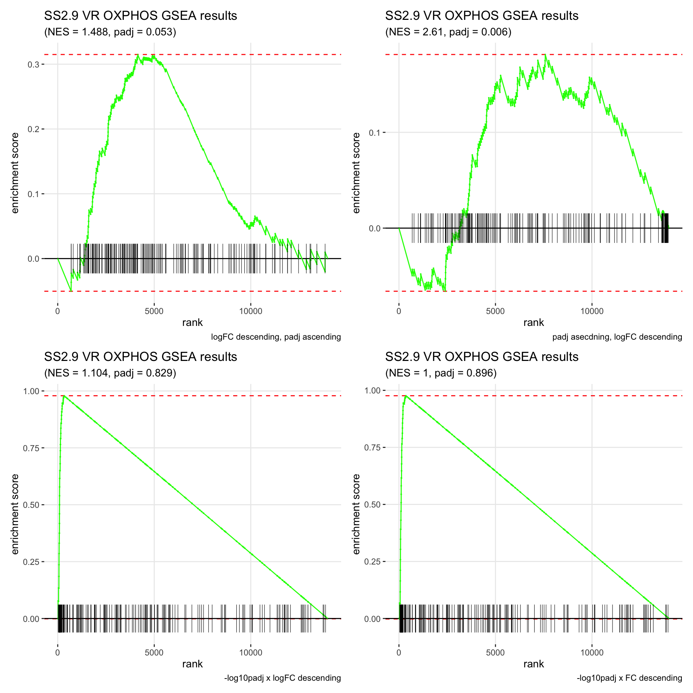

GSEA Choices
Jesslyn Goh and Mike Cuoco
7/20/2020
Last updated: 2020-08-19
Checks: 7 0
Knit directory: jesslyn_ovca/analysis/
This reproducible R Markdown analysis was created with workflowr (version 1.6.2). The Checks tab describes the reproducibility checks that were applied when the results were created. The Past versions tab lists the development history.
Great! Since the R Markdown file has been committed to the Git repository, you know the exact version of the code that produced these results.
Great job! The global environment was empty. Objects defined in the global environment can affect the analysis in your R Markdown file in unknown ways. For reproduciblity it’s best to always run the code in an empty environment.
The command set.seed(20200713) was run prior to running the code in the R Markdown file. Setting a seed ensures that any results that rely on randomness, e.g. subsampling or permutations, are reproducible.
Great job! Recording the operating system, R version, and package versions is critical for reproducibility.
Nice! There were no cached chunks for this analysis, so you can be confident that you successfully produced the results during this run.
Great job! Using relative paths to the files within your workflowr project makes it easier to run your code on other machines.
Great! You are using Git for version control. Tracking code development and connecting the code version to the results is critical for reproducibility.
The results in this page were generated with repository version 729ebf4. See the Past versions tab to see a history of the changes made to the R Markdown and HTML files.
Note that you need to be careful to ensure that all relevant files for the analysis have been committed to Git prior to generating the results (you can use wflow_publish or wflow_git_commit). workflowr only checks the R Markdown file, but you know if there are other scripts or data files that it depends on. Below is the status of the Git repository when the results were generated:
Ignored files:
Ignored: .DS_Store
Ignored: .Rhistory
Ignored: .Rproj.user/
Ignored: analysis/.DS_Store
Ignored: code/.DS_Store
Ignored: data/.DS_Store
Ignored: data/HTAPP/
Ignored: data/Izar_2020/
Ignored: data/gene_lists/.DS_Store
Ignored: data/gene_lists/extra/.DS_Store
Ignored: jesslyn_plots/
Ignored: mike_plots/
Ignored: old/.DS_Store
Ignored: old/edited/.DS_Store
Ignored: renv/.DS_Store
Ignored: renv/library/
Ignored: renv/python/
Ignored: renv/staging/
Ignored: vignettes/
Note that any generated files, e.g. HTML, png, CSS, etc., are not included in this status report because it is ok for generated content to have uncommitted changes.
These are the previous versions of the repository in which changes were made to the R Markdown (analysis/GSEA_choices.Rmd) and HTML (docs/GSEA_choices.html) files. If you’ve configured a remote Git repository (see ?wflow_git_remote), click on the hyperlinks in the table below to view the files as they were in that past version.
| File | Version | Author | Date | Message |
|---|---|---|---|---|
| html | 92568b8 | jgoh2 | 2020-08-17 | Build site. |
| Rmd | d60aeff | jgoh2 | 2020-08-17 | More DE Analysis of other hallmarks |
| Rmd | a27da95 | jgoh2 | 2020-08-16 | GSEA decisions |
| html | a27da95 | jgoh2 | 2020-08-16 | GSEA decisions |
GSEA CHOICES
- This is a continuation of our GSEA choices exploration within the PDX_choices.Rmd file.
- We have previously decided to use the wilcoxon rank sum test, and attempted to determine the best ranking method for GSEA by plotting genes on Volcano Plots and labeling them with their gene ranks. We compared the following ranking methods:
- logFC descending, then padj ascending
- padj ascending, then logFC descending
- -log10padj x logFC descending
- -log10padj x FC descending
Here is the comparison between each ranking method: [
 ]
]- While the volcano plots show us that -log10padj x logFC is the best ranking metric because there is a great separation between highly upregulated and downregulated genes, and the false positives are in the middle of the list, the GSEA plot says otherwise.
- We graphed the GSEA plot for DF20, Patient 8. However, while the -log10padj x logFC metric gave us a negative enrichment score, the -log10padj x FC metric gave us a positive enrichment score (which agrees with results from our VlnPlot).
Here, we would like to have a more in-depth analysis of how GSEA results change depending on our ranking methods, and hopefully be able to detect any problems in our code that might have resulted in the discrepancy in GSEA results based on our ranks.
STEP 1 LOAD SEURAT OBJECT
# Load packages
source(here::here('packages.R'))
#Read in PDX RDS object
PDX_DF20 = readRDS("data/Izar_2020/test/jesslyn_PDX_DF20_processed.RDS")
PDX_DF101 = readRDS("data/Izar_2020/test/jesslyn_PDX_DF101_processed.RDS")
PDX_DF68 = readRDS("data/Izar_2020/test/jesslyn_PDX_DF68_processed.RDS")
#Read in SS2 RDS object
SS2Malignant.8 = readRDS(file = "data/Izar_2020/jesslyn_SS2Malignant8_processed.RDS")
SS2Malignant.9 = readRDS(file = "data/Izar_2020/jesslyn_SS2Malignant9_processed.RDS")
# Read in ccgenes
ccgenes = read_lines("data/gene_lists/regev_lab_cell_cycle_genes.txt")
s.genes <- ccgenes[1:43]
g2m.genes <- ccgenes[44:97]
#Read in hallmarks of interest
hallmark_names = read_lines("data/gene_lists/hallmarks.txt")
hallmark.list <- vector(mode = "list", length = length(hallmark_names))
names(hallmark.list) <- hallmark_names
for(hm in hallmark_names){
if(file.exists(glue("data/gene_lists/hallmarks/{hm}_updated.txt"))){
file <- read_lines(glue("data/gene_lists/hallmarks/{hm}_updated.txt"), skip = 1)
hallmark.list[[hm]] <- file
}
else{
file <- read_lines(glue("data/gene_lists/extra/{hm}.txt"), skip =2)
hallmark.list[[hm]] <- file
}
}
#center module and cell cycle scores and reassign to the metadata of each Seurat object
hm.names <- names(SS2Malignant.8@meta.data)[14:61]
for(i in hm.names){
SS2Malignant8.hm.centered <- scale(SS2Malignant.8[[i]], center = TRUE, scale = FALSE)
SS2Malignant.8 <- AddMetaData(SS2Malignant.8, SS2Malignant8.hm.centered, col.name = glue("{i}.centered"))
SS2Malignant9.hm.centered <- scale(SS2Malignant.9[[i]], center = TRUE, scale = FALSE)
SS2Malignant.9 <- AddMetaData(SS2Malignant.9, SS2Malignant9.hm.centered, col.name = glue("{i}.centered"))
DF20.hm.centered <- scale(PDX_DF20[[i]], center = TRUE, scale = FALSE)
PDX_DF20 <- AddMetaData(PDX_DF20, DF20.hm.centered, col.name = glue("{i}.centered"))
DF101.hm.centered <- scale(PDX_DF101[[i]], center = TRUE, scale = FALSE)
PDX_DF101 <- AddMetaData(PDX_DF101, DF101.hm.centered, col.name = glue("{i}.centered"))
DF68.hm.centered <- scale(PDX_DF68[[i]], center = TRUE, scale = FALSE)
PDX_DF68 <- AddMetaData(PDX_DF68, DF68.hm.centered, col.name = glue("{i}.centered"))
}STEP 2 CALL FINDMARKERS
markers <- vector("list", length = 5)
obj.names <- c("DF20", "DF101", "DF68", "SS2.8", "SS2.9")
names(markers) <- obj.names
objs <- c(PDX_DF20, PDX_DF101, PDX_DF68, SS2Malignant.8, SS2Malignant.9)
for(i in 1:5){
obj.name <- obj.names[[i]]
obj <- objs[[i]]
comparisons <- c("MV", "MR", "VR")
obj.markers <- vector("list", length = 3)
names(obj.markers) <- comparisons
if(str_detect(obj.name, "[DF]")){
obj.markers[["MV"]] <- FindMarkers(obj, group.by = "treatment.status", ident.1 = "MRD", ident.2 = "vehicle", logfc.threshold = 0)
obj.markers[["MR"]] <- FindMarkers(obj, group.by = "treatment.status", ident.1 = "MRD", ident.2 = "relapse", logfc.threshold = 0)
obj.markers[["VR"]] <- FindMarkers(obj, group.by = "treatment.status", ident.1 = "vehicle", ident.2 = "relapse", logfc.threshold = 0)
}
else{
p <- str_split(obj.name, "SS2.")[[1]][2]
obj.markers[["MV"]] <- FindMarkers(obj, group.by = "sample", ident.1 = glue("{p}.1"), ident.2 = glue("{p}.0"), logfc.threshold = 0)
obj.markers[["MR"]] <- FindMarkers(obj, group.by = "sample", ident.1 = glue("{p}.1"), ident.2 = glue("{p}.2"), logfc.threshold = 0)
obj.markers[["VR"]] <- FindMarkers(obj, group.by = "sample", ident.1 = glue("{p}.0"), ident.2 = glue("{p}.2"), logfc.threshold = 0)
}
markers[[obj.name]] <- obj.markers
}STEP 3. RANK GENES
# logFC descending, padj ascending ------------
logFC.padj.rank <- vector("list", length = 5)
names(logFC.padj.rank) <- obj.names
for(name in obj.names){
comparisons <- c("MV", "MR", "VR")
obj.markers <- vector("list", length = 3)
names(obj.markers) <- comparisons
for(comparison in comparisons){
obj.markers[[comparison]] <- markers[[name]][[comparison]] %>%
rownames_to_column() %>%
select(rowname, avg_logFC, p_val_adj) %>%
arrange(-avg_logFC, p_val_adj) %>%
select(rowname, avg_logFC)
}
logFC.padj.rank[[name]] <- obj.markers
}
# padj ascending, logFC descending -------------
padj.logFC.rank <- vector("list", length = 5)
names(padj.logFC.rank) <- obj.names
for(name in obj.names){
comparisons <- c("MV", "MR", "VR")
obj.markers <- vector("list", length = 3)
names(obj.markers) <- comparisons
for(comparison in comparisons){
obj.markers[[comparison]] <- markers[[name]][[comparison]] %>%
rownames_to_column() %>%
select(rowname, avg_logFC, p_val_adj) %>%
arrange(p_val_adj, -avg_logFC) %>%
select(rowname, p_val_adj)
}
padj.logFC.rank[[name]] <- obj.markers
}
# -log10padj x logFC descending -------------
neglog10padj.logFC.rank <- vector("list", length = 5)
names(neglog10padj.logFC.rank) <- obj.names
for(name in obj.names){
comparisons <- c("MV", "MR", "VR")
obj.markers <- vector("list", length = 3)
names(obj.markers) <- comparisons
for(comparison in comparisons){
p <- markers[[name]][[comparison]] %>%
rownames_to_column() %>%
select(rowname, avg_logFC, p_val_adj) %>%
mutate("neglog10padj" = -(log10(p_val_adj)))
p <- p %>% mutate("rank.metric" = neglog10padj * avg_logFC)
obj.markers[[comparison]] <- p %>%
arrange(-rank.metric) %>%
select(rowname, rank.metric)
}
neglog10padj.logFC.rank[[name]] <- obj.markers
}
# -log10padj x FC descending -------------
neglog10padj.FC.rank <- vector("list", length = 5)
names(neglog10padj.FC.rank) <- obj.names
for(name in obj.names){
comparisons <- c("MV", "MR", "VR")
obj.markers <- vector("list", length = 3)
names(obj.markers) <- comparisons
for(comparison in comparisons){
p <- markers[[name]][[comparison]] %>%
rownames_to_column() %>%
select(rowname, avg_logFC, p_val_adj) %>%
mutate("neglog10padj" = -(log10(p_val_adj))) %>%
mutate("FC" = exp(avg_logFC))
p <- p %>% mutate("rank.metric" = neglog10padj * FC)
obj.markers[[comparison]] <- p %>% arrange(-rank.metric) %>%
select(rowname, rank.metric)
}
neglog10padj.FC.rank[[name]] <- obj.markers
}STEP 4. RUN GSEA
- We will run GSEA with each ranking method and compare results
# logFC descending, padj ascending -----------
logFC.padj.GSEA.results <- vector("list", length = 5)
logFC.padj.GSEA.plots <- vector("list", length = 5)
names(logFC.padj.GSEA.plots) <- obj.names
names(logFC.padj.GSEA.results) <- obj.names
for(name in obj.names){
comparisons <- c("MV", "MR", "VR")
obj.results <- vector("list", length = 3)
names(obj.results) <- comparisons
obj.plots <- vector("list", length = 3)
names(obj.plots) <- comparisons
for(comparison in comparisons){
ranks <- logFC.padj.rank[[name]][[comparison]] %>% deframe()
obj.results[[comparison]] <- fgsea(hallmark.list, stats = ranks, minSize = 15, maxSize = 500, nperm = 1000) %>%
as_tibble() %>%
select(-leadingEdge, -ES, -nMoreExtreme) %>%
arrange(desc(NES), padj)
padj <- obj.results[[comparison]] %>% filter(pathway == "UNUPDATED.OXPHOS") %>% select(padj) %>% deframe() %>% round(digits = 3)
NES = obj.results[[comparison]] %>% filter(pathway == "UNUPDATED.OXPHOS") %>% select(NES) %>% deframe() %>% round(digits = 3)
obj.plots[[comparison]] <- plotEnrichment(pathway = hallmark.list[["UNUPDATED.OXPHOS"]], stats = ranks) + labs(title = glue("{name} {comparison} OXPHOS GSEA results"), subtitle = glue("(NES = {NES}, padj = {padj})"), caption = "logFC descending, padj ascending")
}
logFC.padj.GSEA.results[[name]] <- obj.results
logFC.padj.GSEA.plots[[name]] <- obj.plots
}
# padj ascending, logFC descending -----------
padj.logFC.GSEA.results <- vector("list", length = 5)
padj.logFC.GSEA.plots <- vector("list", length = 5)
names(padj.logFC.GSEA.plots) <- obj.names
names(padj.logFC.GSEA.results) <- obj.names
for(name in obj.names){
comparisons <- c("MV", "MR", "VR")
obj.results <- vector("list", length = 3)
names(obj.results) <- comparisons
obj.plots <- vector("list", length = 3)
names(obj.plots) <- comparisons
for(comparison in comparisons){
ranks <- padj.logFC.rank[[name]][[comparison]] %>% deframe()
obj.results[[comparison]] <- fgsea(hallmark.list, stats = ranks, minSize = 15, maxSize = 500, nperm = 1000) %>%
as_tibble() %>%
select(-leadingEdge, -ES, -nMoreExtreme) %>%
arrange(desc(NES), padj)
padj <- obj.results[[comparison]] %>% filter(pathway == "UNUPDATED.OXPHOS") %>% select(padj) %>% deframe() %>% round(digits = 3)
NES = obj.results[[comparison]] %>% filter(pathway == "UNUPDATED.OXPHOS") %>% select(NES) %>% deframe() %>% round(digits = 3)
obj.plots[[comparison]] <- plotEnrichment(pathway = hallmark.list[["UNUPDATED.OXPHOS"]], stats = ranks) + labs(title = glue("{name} {comparison} OXPHOS GSEA results"), subtitle = glue("(NES = {NES}, padj = {padj})"), caption = "padj asecdning, logFC descending")
}
padj.logFC.GSEA.results[[name]] <- obj.results
padj.logFC.GSEA.plots[[name]] <- obj.plots
}
# neglog10padj x logFC -----------
neglogpadj.logFC.GSEA.results <- vector("list", length = 5)
neglogpadj.logFC.GSEA.plots <- vector("list", length = 5)
names(neglogpadj.logFC.GSEA.plots) <- obj.names
names(neglogpadj.logFC.GSEA.results) <- obj.names
for(name in obj.names){
comparisons <- c("MV", "MR", "VR")
obj.results <- vector("list", length = 3)
names(obj.results) <- comparisons
obj.plots <- vector("list", length = 3)
names(obj.plots) <- comparisons
for(comparison in comparisons){
ranks <- neglog10padj.logFC.rank[[name]][[comparison]] %>% deframe()
obj.results[[comparison]] <- fgsea(hallmark.list, stats = ranks, minSize = 15, maxSize = 500, nperm = 1000) %>%
as_tibble() %>%
select(-leadingEdge, -ES, -nMoreExtreme) %>%
arrange(desc(NES), padj)
padj <- obj.results[[comparison]] %>% filter(pathway == "UNUPDATED.OXPHOS") %>% select(padj) %>% deframe() %>% round(digits = 3)
NES = obj.results[[comparison]] %>% filter(pathway == "UNUPDATED.OXPHOS") %>% select(NES) %>% deframe() %>% round(digits = 3)
obj.plots[[comparison]] <- plotEnrichment(pathway = hallmark.list[["UNUPDATED.OXPHOS"]], stats = ranks) + labs(title = glue("{name} {comparison} OXPHOS GSEA results"), subtitle = glue("(NES = {NES}, padj = {padj})"), caption = "-log10padj x logFC descending")
}
neglogpadj.logFC.GSEA.results[[name]] <- obj.results
neglogpadj.logFC.GSEA.plots[[name]] <- obj.plots
}
# neglog10padj x FC -----------
neglogpadj.FC.GSEA.results <- vector("list", length = 5)
neglogpadj.FC.GSEA.plots <- vector("list", length = 5)
names(neglogpadj.FC.GSEA.plots) <- obj.names
names(neglogpadj.FC.GSEA.results) <- obj.names
for(name in obj.names){
comparisons <- c("MV", "MR", "VR")
obj.results <- vector("list", length = 3)
names(obj.results) <- comparisons
obj.plots <- vector("list", length = 3)
names(obj.plots) <- comparisons
for(comparison in comparisons){
ranks <- neglog10padj.FC.rank[[name]][[comparison]] %>% deframe()
obj.results[[comparison]] <- fgsea(hallmark.list, stats = ranks, minSize = 15, maxSize = 500, nperm = 1000) %>%
as_tibble() %>%
select(-leadingEdge, -ES, -nMoreExtreme) %>%
arrange(desc(NES), padj)
padj <- obj.results[[comparison]] %>% filter(pathway == "UNUPDATED.OXPHOS") %>% select(padj) %>% deframe() %>% round(digits = 3)
NES = obj.results[[comparison]] %>% filter(pathway == "UNUPDATED.OXPHOS") %>% select(NES) %>% deframe() %>% round(digits = 3)
obj.plots[[comparison]] <- plotEnrichment(pathway = hallmark.list[["UNUPDATED.OXPHOS"]], stats = ranks) + labs(title = glue("{name} {comparison} OXPHOS GSEA results"), subtitle = glue("(NES = {NES}, padj = {padj})"), caption = "-log10padj x FC descending")
}
neglogpadj.FC.GSEA.results[[name]] <- obj.results
neglogpadj.FC.GSEA.plots[[name]] <- obj.plots
}
# show plots ----------
GSEA.plots <- vector("list", length = 5)
names(GSEA.plots) <- obj.names
for(name in obj.names){
comparisons <- c("MV", "MR", "VR")
obj.plots <- vector("list", length =3)
names(obj.plots) <- comparisons
for(comparison in comparisons){
p <- logFC.padj.GSEA.plots[[name]][[comparison]] + padj.logFC.GSEA.plots[[name]][[comparison]] + neglogpadj.logFC.GSEA.plots[[name]][[comparison]] + neglogpadj.FC.GSEA.plots[[name]][[comparison]] + plot_layout(ncol = 2, nrow = 2)
obj.plots[[comparison]] <- p
ggsave(plot = p, filename = glue("GSEA.{name}{comparison}.png"), path = "jesslyn_plots/PDX_test/GSEA_paired/test", width = 10, height = 10)
}
GSEA.plots[[name]] <- obj.plots
}
GSEA.plots[["DF20"]][["MV"]]
GSEA.plots[["DF20"]][["MR"]]
GSEA.plots[["DF20"]][["VR"]]
GSEA.plots[["DF101"]][["MV"]]
GSEA.plots[["DF101"]][["MR"]]
GSEA.plots[["DF101"]][["VR"]]
GSEA.plots[["DF68"]][["MV"]]
GSEA.plots[["DF68"]][["MR"]]
GSEA.plots[["DF68"]][["VR"]]
GSEA.plots[["SS2.8"]][["MV"]]
GSEA.plots[["SS2.8"]][["MR"]]
GSEA.plots[["SS2.8"]][["VR"]]
GSEA.plots[["SS2.9"]][["MV"]]
GSEA.plots[["SS2.9"]][["MR"]]
GSEA.plots[["SS2.9"]][["VR"]]
- We get very different results depending on the ranking method we use. -log10padj x logFC and -log10padj x FC seem to give us opposite NES values most of the time. Which of the two metrics is better is not consistent, with x FC sometimes giving us GSEA results that agree more with our other analyses, and x logFC at other times.
- Interesting to note that GSEA plots using -log10padj x logFC or FC metrics give us plots with straight lines, while the plots using only logFC or padj give us curvier plots that look more like what GSEA plots usually look like.
sessionInfo()R version 4.0.2 (2020-06-22)
Platform: x86_64-apple-darwin17.0 (64-bit)
Running under: macOS Mojave 10.14.6
Matrix products: default
BLAS: /Library/Frameworks/R.framework/Versions/4.0/Resources/lib/libRblas.dylib
LAPACK: /Library/Frameworks/R.framework/Versions/4.0/Resources/lib/libRlapack.dylib
locale:
[1] en_US.UTF-8/en_US.UTF-8/en_US.UTF-8/C/en_US.UTF-8/en_US.UTF-8
attached base packages:
[1] stats graphics grDevices datasets utils methods base
other attached packages:
[1] ggbeeswarm_0.6.0 ggpubr_0.4.0 GGally_2.0.0 gt_0.2.1 reshape2_1.4.4
[6] tidyselect_1.1.0 fgsea_1.14.0 presto_1.0.0 data.table_1.12.8 Rcpp_1.0.5
[11] glue_1.4.1 patchwork_1.0.1 EnhancedVolcano_1.6.0 ggrepel_0.8.2 here_0.1
[16] readxl_1.3.1 forcats_0.5.0 stringr_1.4.0 dplyr_1.0.0 purrr_0.3.4
[21] readr_1.3.1 tidyr_1.1.0 tibble_3.0.3 ggplot2_3.3.2 tidyverse_1.3.0
[26] cowplot_1.0.0 Seurat_3.1.5 BiocManager_1.30.10 renv_0.11.0-4
loaded via a namespace (and not attached):
[1] backports_1.1.8 fastmatch_1.1-0 workflowr_1.6.2 plyr_1.8.6 igraph_1.2.5
[6] lazyeval_0.2.2 splines_4.0.2 BiocParallel_1.22.0 listenv_0.8.0 digest_0.6.25
[11] htmltools_0.5.0 fansi_0.4.1 magrittr_1.5 cluster_2.1.0 ROCR_1.0-11
[16] openxlsx_4.1.5 limma_3.44.3 globals_0.12.5 modelr_0.1.8 colorspace_1.4-1
[21] blob_1.2.1 rvest_0.3.5 haven_2.3.1 xfun_0.15 crayon_1.3.4
[26] jsonlite_1.7.0 survival_3.2-3 zoo_1.8-8 ape_5.4 gtable_0.3.0
[31] leiden_0.3.3 car_3.0-8 future.apply_1.6.0 abind_1.4-5 scales_1.1.1
[36] DBI_1.1.0 rstatix_0.6.0 viridisLite_0.3.0 reticulate_1.16 foreign_0.8-80
[41] rsvd_1.0.3 tsne_0.1-3 htmlwidgets_1.5.1 httr_1.4.1 RColorBrewer_1.1-2
[46] ellipsis_0.3.1 ica_1.0-2 farver_2.0.3 pkgconfig_2.0.3 reshape_0.8.8
[51] uwot_0.1.8 dbplyr_1.4.4 labeling_0.3 rlang_0.4.7 later_1.1.0.1
[56] munsell_0.5.0 cellranger_1.1.0 tools_4.0.2 cli_2.0.2 generics_0.0.2
[61] broom_0.7.0 ggridges_0.5.2 evaluate_0.14 yaml_2.2.1 knitr_1.29
[66] fs_1.4.2 fitdistrplus_1.1-1 zip_2.0.4 RANN_2.6.1 pbapply_1.4-2
[71] future_1.18.0 nlme_3.1-148 whisker_0.4 xml2_1.3.2 compiler_4.0.2
[76] rstudioapi_0.11 beeswarm_0.2.3 plotly_4.9.2.1 curl_4.3 png_0.1-7
[81] ggsignif_0.6.0 reprex_0.3.0 stringi_1.4.6 lattice_0.20-41 Matrix_1.2-18
[86] vctrs_0.3.2 pillar_1.4.6 lifecycle_0.2.0 lmtest_0.9-37 RcppAnnoy_0.0.16
[91] irlba_2.3.3 httpuv_1.5.4 R6_2.4.1 promises_1.1.1 KernSmooth_2.23-17
[96] gridExtra_2.3 rio_0.5.16 vipor_0.4.5 codetools_0.2-16 MASS_7.3-51.6
[101] assertthat_0.2.1 rprojroot_1.3-2 withr_2.2.0 sctransform_0.2.1 parallel_4.0.2
[106] hms_0.5.3 grid_4.0.2 rmarkdown_2.3 carData_3.0-4 Rtsne_0.15
[111] git2r_0.27.1 lubridate_1.7.9